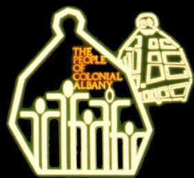

|


The Colonial Albany Social History Project is a model
community history program of the New
York State Museum, an agency of the State Education Department through its Office of Cultural Education.
The Colonial Albany Project was formed in 1981 to understand pre-industrial community life by studying
the contributions of the more than 16,000 diverse individuals who lived in the city of Albany during its formative years. The project offices closed in July 2013 following the retirement of its founder. However, all of its activities continue toward fulfilling the core goals and objectives as listed below.
The People of Colonial Albany Live Here Website continues to incorporate and new features, further articulate and link current offerings, and is open for business - 24/7/365.

The Colonial Albany Project promotes awareness and understanding
of New York's rich and complex heritage through programs and services that
address the core experiences of the diverse peoples of New York State today.
Database biographies for each of the 16,000 people who lived in early Albany make the project personally relevant to an astounding number of living Americans. Because of its inclusiveness and the depth of its inquiry, the project sets a new standard for understanding life in early American communities. Staffed primarily by students and volunteers, the Colonial Albany Project represents a practical example of the community approach to historical research, programming, and service.
Please consider the comprehensive project Guide as it represents the latest thinking on all things related to the Colonial Albany Social History Project and on each of these basic elements.
- Research: Database
biographies are in progress for
each of the 16,000 people who lived in the city
of Albany before the Industrial Revolution. This population represents an
important core element of early New York society. The life course histories
of the people of colonial Albany are based on an exhaustive and systematic
search of historical records and literary sources.
The biographical profiles are supplemented with a graphics
archive of visual images of early Albany people and their material culture,
community maps, cityscapes, and of comparative images from other communities.
- Programming: Community
history is shared through a range of publications, lectures and public presentations,
portable exhibits, and more innovative educational programs. Programs
interpret the early Albany experience for diverse audiences including present-day
community members, descendants, the residents of other communities with similar
experiences, students at all levels, professional historians, and those interested
in particular themes ranging from childhood to community economics. This website
represents the newest programming initiative and is adding new
features on an ongoing basis!
-
Service: The Colonial Albany Project has provided intensive training in social history research and practical experience in the work of the community historian for more than 300 student interns and volunteers. A comprehensive and frequently updated project guide explains the community history approach to the past in theory and practice. As a model community history program, the project has assisted numerous groups and individuals in adapting its experiences and resources to other settings. The Colonial Albany Project provides guidance and
networking services for those studying early American social history.
A growing number of graduate theses, monographs, and articles have utilized
the project's research resources.
The project logo is based on the outline
of the map of Albany in 1695 (shown in the background)
as drawn by Reverend John Miller. The thick
border reminds us that the people who lived in this early American city had
lives substantially different from the farmers
and foresters who inhabited surrounding Rensselaerswyck
and greater Albany County. The stick figures
represent the diverse peoples (men, women, and children of all backgrounds)
who lived in the city before the Industrial Revolution and whose lives are at
the heart of all Colonial Albany Project activities. The logo was designed
by State Museum artist and friend Keith Prior during the early 1980s.
Home | Email | Site Index | New York State Museum
first posted 2000; last revised 6/12/17
|